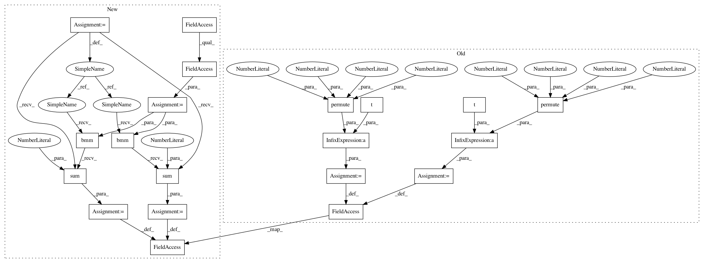

b6240c06fb49020e2d51703a1fcfddba7e27297d,bindsnet/learning/__init__.py,PostPre,_conv2d_connection_update,#PostPre#,181
Before Change
source_x = im2col_indices(
self.source.x, kernel_height, kernel_width, padding=padding, stride=stride
)
target_x = self.target.x.permute(1, 2, 3, 0).view(out_channels, -1)
source_s = im2col_indices(
self.source.s.float(),
kernel_height,
kernel_width,
padding=padding,
stride=stride,
)
target_s = self.target.s.permute(1, 2, 3, 0).view(out_channels, -1).float()
// Pre-synaptic update.
if self.nu[0]:
pre = target_x @ source_s.t()
self.connection.w -= self.nu[0] * pre.view(self.connection.w.size())
// Post-synaptic update.
if self.nu[1]:
post = target_s @ source_x.t()
self.connection.w += self.nu[1] * post.view(self.connection.w.size())
super().update()
After Change
// Get convolutional layer parameters.
out_channels, _, kernel_height, kernel_width = self.connection.w.size()
padding, stride = self.connection.padding, self.connection.stride
batch_size = self.source.batch_size
// Reshaping spike traces and spike occurrences.
source_x = im2col_indices(
self.source.x, kernel_height, kernel_width, padding=padding, stride=stride
)
target_x = self.target.x.view(batch_size, out_channels, -1)
source_s = im2col_indices(
self.source.s.float(),
kernel_height,
kernel_width,
padding=padding,
stride=stride,
)
target_s = self.target.s.view(batch_size, out_channels, -1).float()
// Pre-synaptic update.
if self.nu[0]:
pre = torch.bmm(target_x, source_s.permute((0, 2, 1))).sum(0)
self.connection.w -= self.nu[0] * pre.view(self.connection.w.size())
// Post-synaptic update.
if self.nu[1]:
post = torch.bmm(target_s, source_x.permute((0, 2, 1))).sum(0)
self.connection.w += self.nu[1] * post.view(self.connection.w.size())
super().update()
In pattern: SUPERPATTERN
Frequency: 3
Non-data size: 20
Instances
Project Name: BindsNET/bindsnet
Commit Name: b6240c06fb49020e2d51703a1fcfddba7e27297d
Time: 2019-06-21
Author: djsaunde@umass.edu
File Name: bindsnet/learning/__init__.py
Class Name: PostPre
Method Name: _conv2d_connection_update
Project Name: BindsNET/bindsnet
Commit Name: b6240c06fb49020e2d51703a1fcfddba7e27297d
Time: 2019-06-21
Author: djsaunde@umass.edu
File Name: bindsnet/learning/__init__.py
Class Name: PostPre
Method Name: _conv2d_connection_update
Project Name: BindsNET/bindsnet
Commit Name: f3ca0de6ca8c1b6b75ff0d75cc9d0e19adca7648
Time: 2019-06-22
Author: djsaunde@umass.edu
File Name: bindsnet/learning/__init__.py
Class Name: Hebbian
Method Name: _conv2d_connection_update
Project Name: BindsNET/bindsnet
Commit Name: f3ca0de6ca8c1b6b75ff0d75cc9d0e19adca7648
Time: 2019-06-22
Author: djsaunde@umass.edu
File Name: bindsnet/learning/__init__.py
Class Name: WeightDependentPostPre
Method Name: _conv2d_connection_update